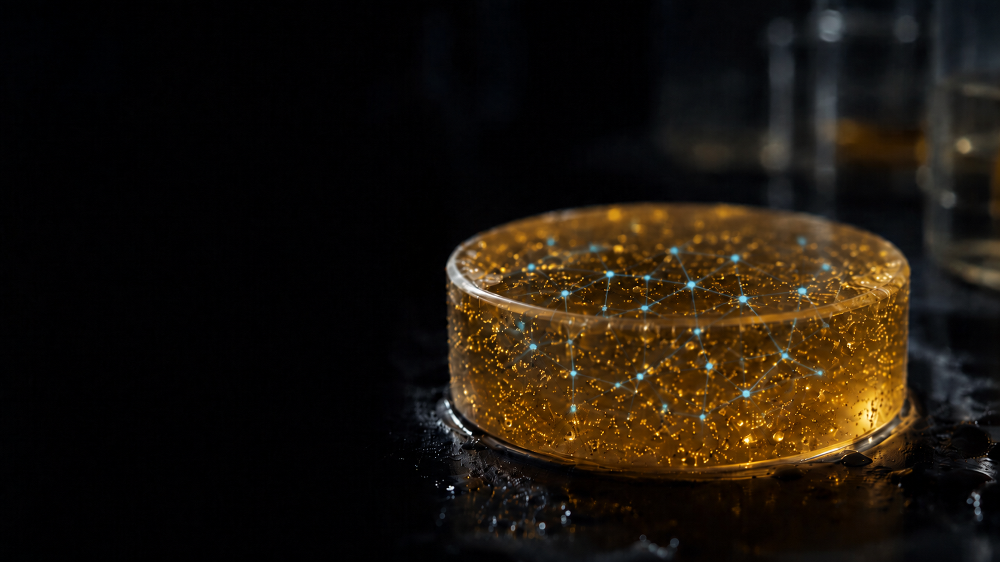

Newsroom · Lead story
The Straits Times features A/P Rosa's AI-enabled living laboratory models
Artificial intelligence and organotypic models, used together to advance personalised dentistry and regenerative oral care.
The Straits Times
May 2026
Read the story →
Espaco abaixo do hero so para conferir a emenda com o resto da pagina.